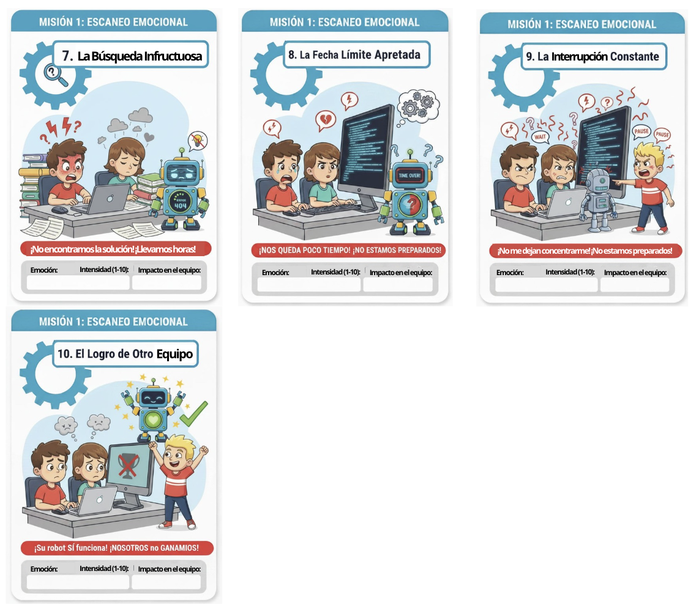
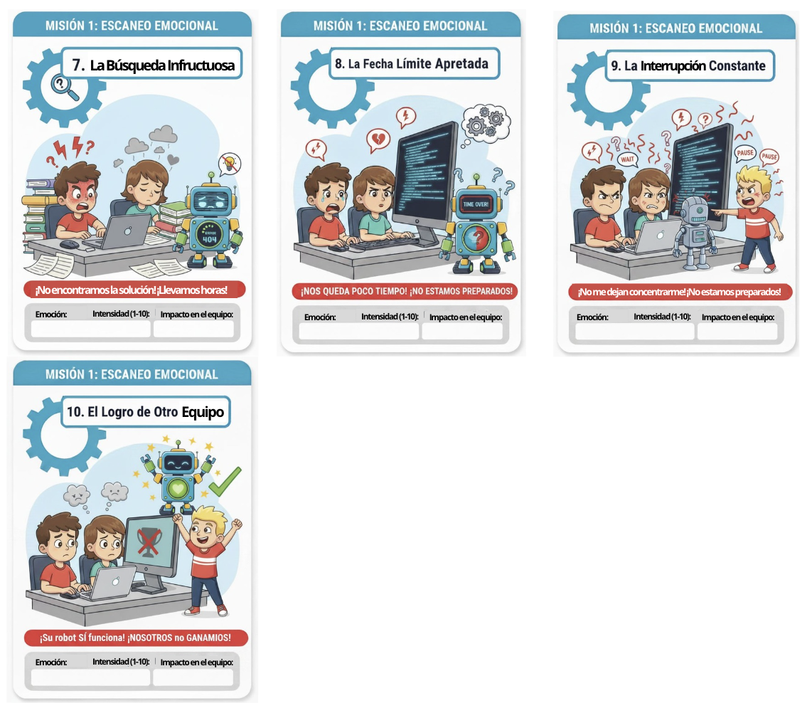
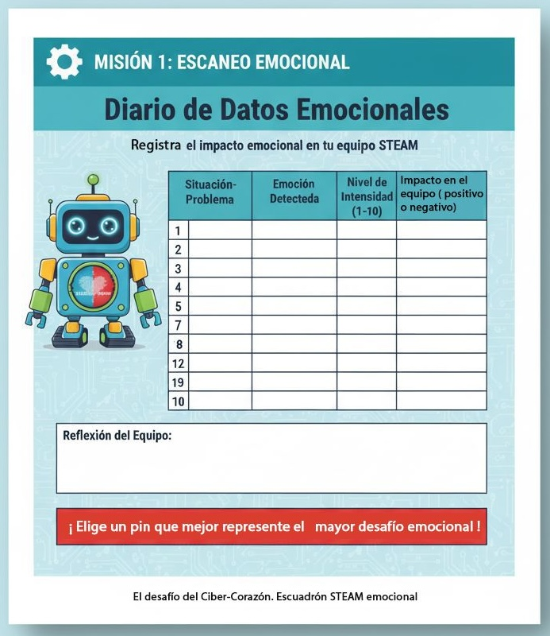
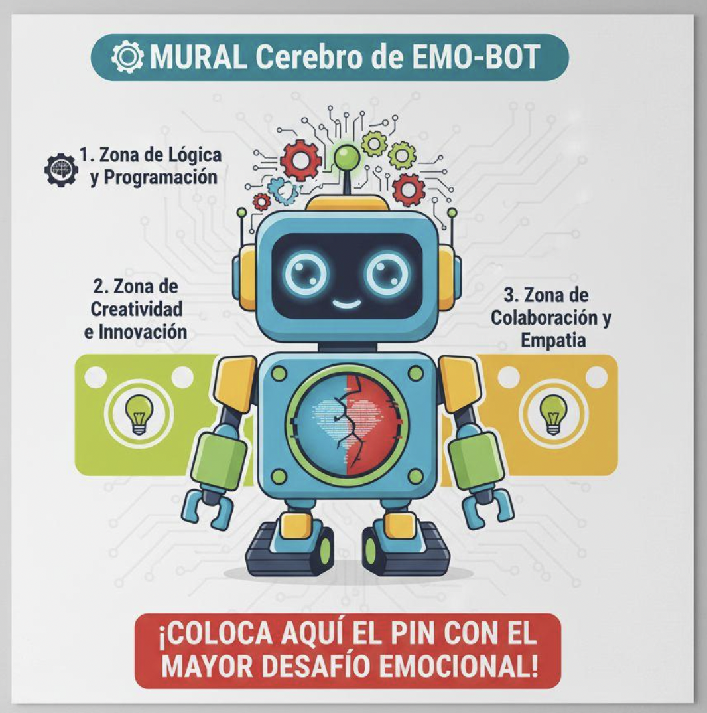

Misión 1: ¡Sistema Hackeado! Diagnóstico de Emergencia.

"¡Atención, Escuadrón STEAM Emocional! Soy EMO-BOT 4.0. Como ya sabéis, mi sistema emocional está en modo ¡CRÍTICO! El Virus de la Confusión ha hecho de las suyas y no puedo reconocer bien las emociones, ni las mías ni las de la gente. ¡Es un caos en mi Ciber-Corazón!
Para poder arreglarme, necesitamos entender al enemigo. Antes de programar nada, tenemos que ser unos verdaderos CIBER-ESPECIALISTAS EN EMOCIONES.
Vuestra misión 1 es: convertiros en DETECTIVES EMOCIONALES.
Vais a realizar un 'ESCANEO EMOCIONAL' de 10 'Situaciones-Problema' que pueden ocurrir aquí mismo, en nuestro aula STEAM. Algunas son fáciles, ¡otras pueden activar el virus!
- ¿Cómo vamos a hacer el Escaneo?
1. Analizar las tarjetas: Cada equipo recibirá 10 "Tarjetas de Situaciones-Problema". En cada tarjeta veréis una escena donde EMO-BOT o sus amigos están teniendo un problema.
 

2. Rellenar el 'Diario de Datos Emocionales': Para cada situación, debéis discutir en equipo y registrar en vuestro diario:
- ¿Qué emoción detecta EMO-BOT? (Por ejemplo: alegría, tristeza, enfado, miedo, frustración, sorpresa...).
- ¿Qué nivel de intensidad tiene esa emoción? (Del 1 al 10. ¡El 10 es el máximo!)
- ¿Cuál es el impacto en el equipo? (¿Esa emoción ayuda a trabajar? ¿Lo bloquea? ¿Es positiva o negativa para la misión?).

3. Indicar el impacto en el cerebro de EMO-BOT: Después de analizar las 10 situaciones, usaremos vuestros datos para colocar pequeños "pins" de colores en el gran Mural del Cerebro de EMO-BOT. Así veremos qué zonas de mi cerebro (la lógica, la creatividad o la emoción) están más afectadas o sobrecargadas por el virus.

¡La precisión de vuestro escaneo es vital! Cuanto mejor entendamos cómo funcionan estas emociones, ¡más cerca estaremos de reprogramar mi Ciber-Corazón. Cada dato nos acerca a la solución.
¡Que empiece el escaneo emocional! ¡A por esos Ciber-Kilos!"